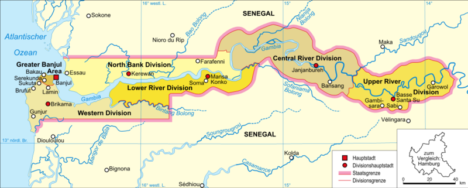
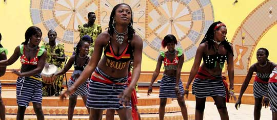
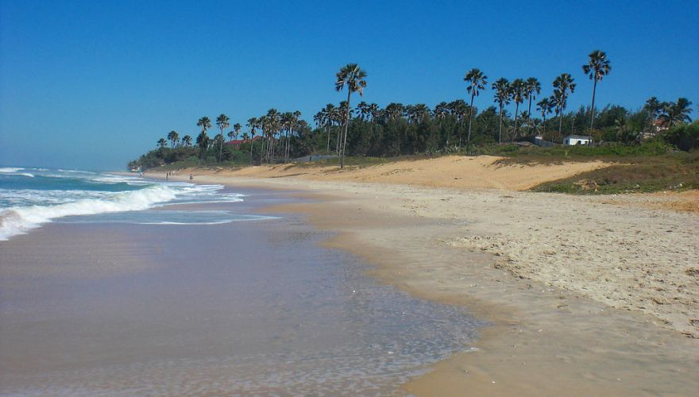
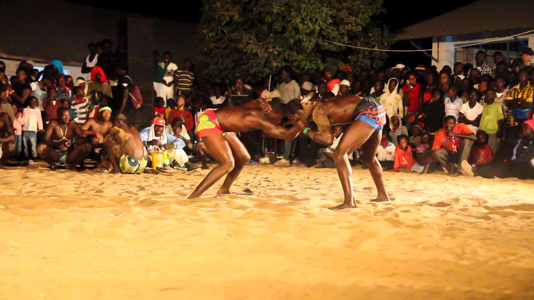

Gambia to maleńki kraj w Afryce Zachodniej wciśnięty wąskim klinem w Senegal. To najmniejsze państwo kontynentalnej Afryki (zaledwie 11 295 km2).
Gambia w pigułce
Gambia to najmniejszy kraj Afryki, leży w Afryce Zachodniej nad Oceanem Atlantyckim. Pozostałe sąsiedztwo od wschodu, zachodu i południa to Senegal. Cały obszar kraju to pas ziemi obejmujący rzekę Gambię. Gambia podzielona jest na 5 okręgów ze stolicą w Banjulu.
Położenie
Powierzchnia: 11 295 km2
Ludność: 1 690 000
Język urzędowy: angielski
Plemiona: Mandinka, Fula, Wolof, Jola
Waluta: dalasi (GMD) 1zł.= 12dalasi
Religia dominująca: islam
Ustrój: republika
Gambia znaczy rzeka
Rzeka Gambia stanowi kluczowy element krajobrazu. Około 200 km w głąb lądu woda w rzece nadal jest słona (występują delfiny, rekiny, lasy namorzynowe, kolonie ostryg). Dalej w słodkich wodach rzeki żyją hipopotamy, krokodyle, wiele gatunków ryb, ptactwo.
"Gambia znaczy rzeka"
bo to najważniejszy szlak komunikacyjny kraju (nie ma ani jednego mostu), stanowi wielką atrakcję turystyczną ale przede wszystkim dostarcza pożywienia (ryb i owoców morza).
Klimat
Kraj leży w strefie klimatu zwrotnikowego ze średnią temperaturą roczną powyżej 20 C, najwyższa temperatura przekracza 35 C. Duża ilość opadów występuje w porze deszczowej ( od czerwca do pażdziernika). Roślinność to w większości sawanna, w górnym biegu rzeki lasy galeriowe, w dolnym biegu lasy namorzynowe i rozległe tereny bagienne. Gambia żyje z rybołówstwa i rolnictwa:
orzeszki ziemne
ryż
kukurydza
proso
sorgo
palmy oleiste
Rośliny i zwierzęta
Gambia jest prawdziwą mekką dla obserwatorów ptaków, żyje ich tutaj ponad pół tysiąca gatunków; między innymi:
W wodach Gambii i w Atlantyku żyje ponad sześćset gatunków ryb , rekiny,delfiny, krokodyle , hipopotamy, osrtygi. Kiedyś żyły tu słonie, obecnie można spotkać niemal dwieście gatunków dzikich zwierząt; między innymi:
Niewielka wyspa u ujścia potężnej Gambii do Atlantyku połączona jest dziś ze stałym lądem ale od wieków oddzielona była od kontynentu bagnami. To położenie przeszkadzało w żywiołowym rozwoju stolicy. Obecnie znajduje się tu pałac prezydencki, siedziba rządu, ministerstwa, konsulaty, urzędy, instytucje naukowe. Turystyczną ciekawostką zapewne jest:
Muzeum Narodowe, Albert Market, Łuk Triumfalny, pomnik prezydenta Jammeha.
Podążając wąskimi uliczkami starego miasta można obserwować kolonialną przeszłość Banjulu; najstarszy reprezentacyjny budynek - siedziba brytyjskiego garnizonu zwana:
Wieżą Zegarową.
Niedaleko widać:
Katedrę pod wezwaniem Wniebowzięcia Najświętszej Marii Panny.
Godny obejrzenia jest równiez zabytkowy meczet.




Delta Gambii
Mieszkańcy Gambii mówią z przekonaniem:
"Gambia to rzeka"
i mają rację.Jest ich błogosławieństwem bo dostarcza pożywienia, wody do upraw, stanowi trasę komunikacyjną, jest atrakcją turystyczną z bogatą florą i fauną. Była w przeszłości ich przekleństwem gdyż tą dogodną drogą wodną odpływały europejskie statki pełne afrykańskich skarbów: kości słoniowej, drogocennych gatunków drewna, skór dzikich zwierząt, orzeszków ziemnych, wreszcie około 3 mln niewolników. O ten trakt handlowy,Portugalczycy, Holendrzy, Francuzi, Brytyjczycy toczyli przez wieki zacięte bitwy. W najbliższej okolicy jest sporo ciekawych miejsc wartych obejrzenia, między innymi:
-targ i terminal portowy na północnym brzegu Gambii.
Informacje praktyczne
Najlepszy moment na podróż do Gambii to okres od listopada do lutego, jest wtedy ciepło, mało opadów i co za tym idzie mało komarów. W 2003 władze Gambi zniosły obowiązek wizowy wobec polskich obywateli, paszport musi mieć ważność powyżej 6 miesięcy. Obowiązkowe jest posiadanie dowodu ważnego szczepienia przeciwko żółtej febrze w międzynarodowej tzw. żółtej książeczce szczepień. W kraju tym przez cały rok obowiązuje czas uniwersalny, czyli +0 GMT, co oznacza, że lecąc z Polski cofamy zegarki o godzinę zimą i o 2 godziny latem. Luźne podejście miejscowych do punktualności doskonale obrazuje lokalne powiedzenie:
"Gambia Mayby Time"
(skrót od GMT), do czego przyzwyczajamy się już po kilku dniach. Napięcie w gniazdkach wynosi 220 V, więc warto mieć ze sobą adapter do swobodnego korzystania z urządzeń elektrycznych. Przyda się również latarka.
W strefie turystycznej przed hotelami czekają zielone taksówki autoryzowane przez rząd Gambii, natomiast dziesięciokrotnie tańsze żółte taksówki są również ogólnodostępne.
Gambia jest uważana za kraj znacznie bezpieczniejszy niż sąsiednie kraje. Mówi się o legendarnej uczciwości Gambijczyków. W większości ludzie są otwarci, uśmiechnięci i pozytywnie nastawieni do turystów.
W większości hoteli znajdują się punkty pierwszej pomocy medycznej, a w określonych godzinach dyżurują lekarze. W Gambii znajdują się w większych miastach kliniki i kilka szpitali.
Numer kierunkowy do Gambii to +220. Na terenie kraju działają sieci komórkowe takie jak:
Africell, Comium Mobile, Gamcel.
Siedziba narodowej organizacji turystycznej:
Gambia Tourism Board
znajduje się w Kotu, pod numerem tel.+220 446 24 91.
{kind=link}
{kind=link}
{kind=link}
{kind=link}
{kind=link}
{kind=link}
{kind=link}
{kind=link}
{kind=link}
{kind=link}
{kind=link}
{kind=link}
{kind=link}
{kind=link}
{kind=link}
{kind=link}
{kind=link}
{kind=link}
{kind=link}